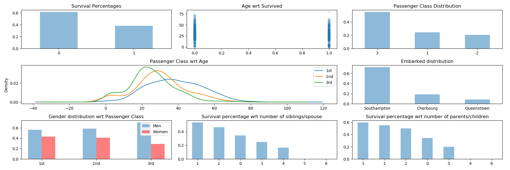

The main goals of this project were to:
Using matplotlib, and following the Predicting Titanic Survivors with Machine Learning conference on YouTube, I was able to get some insight in the provided training data. A few plots below show most of these insights.
